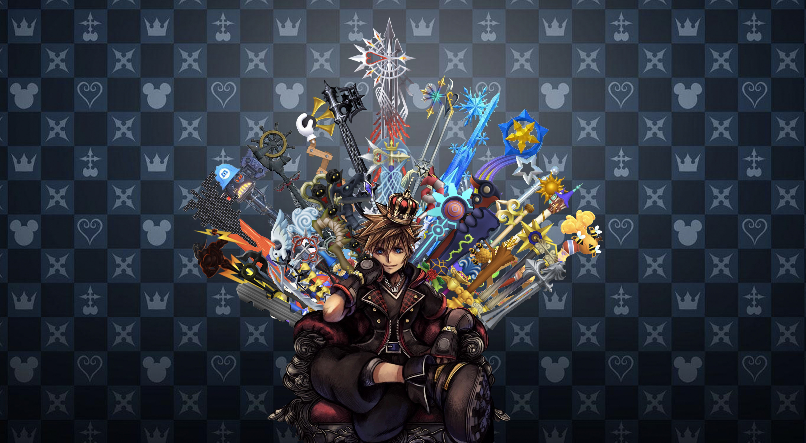
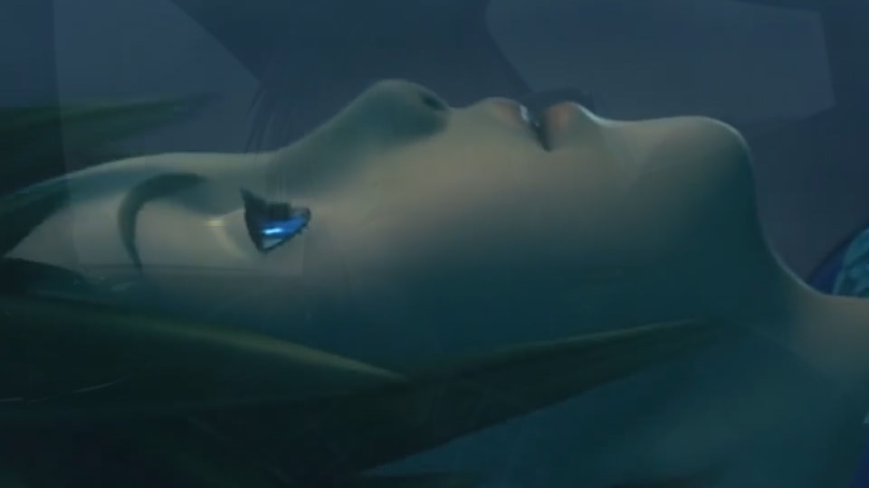

Now the majority of my work is on that website so this section will be comprised of my favorites
and also what I still have access to!

This is the project that I am definetly most proud of.
It is a composite so each of the items in this picture are taken from completely different places.
It took a long time to get all of the weapons to looks somewhat similar in resolution since they were taken from games
that were 14 years apart.

This is another project from around the same time that the previos one was made.
The goal was to make a trailer for a upcoming movie/game(didn't need to be announced just what you thougth it would be like).
So I chose the next Kingdom Hearts Game because it is my favorite game franchise and I'm very excited for the next game.